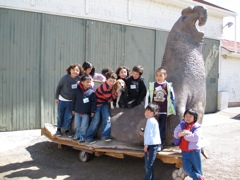
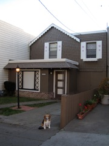
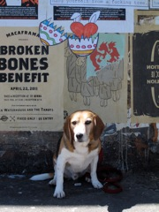
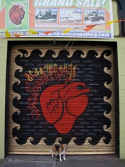
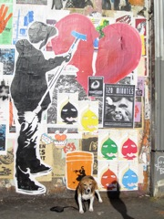
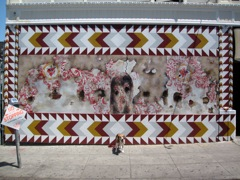
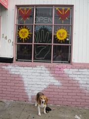
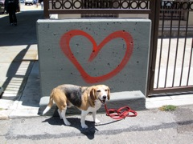
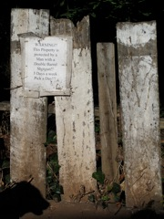
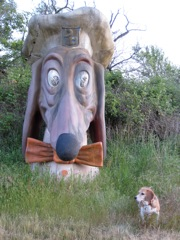

|
 Elephant seal and Lafayette School kids |
"Hearts for Haiti", Craig Britton |
Hearts in SF 2011: "Street Life Greek Vase", Bill Russell |
|
Justice |
 131 Persia heart shutters |
 Heart Easter rabbit |
|
 El Corazon del Fiero |
 A few days later |
New mural in Balmy Alley |
|
Gold peace heart shadow |
 Mission Dolores mural reproduction |
 Open psychic |
|
 Quick and dirty |
 Encroaching |
 Return to the Doggie Diner head, May 2011 |
|
Sundown at the Buckeye |
||
|
|
||